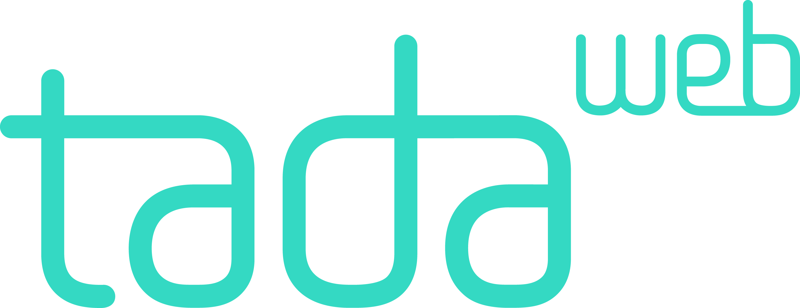
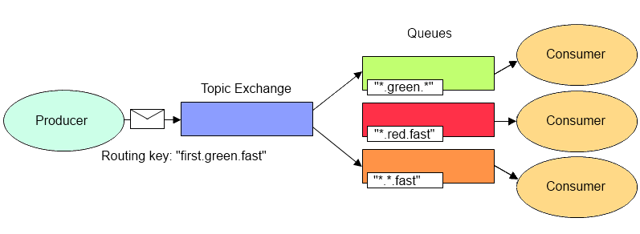
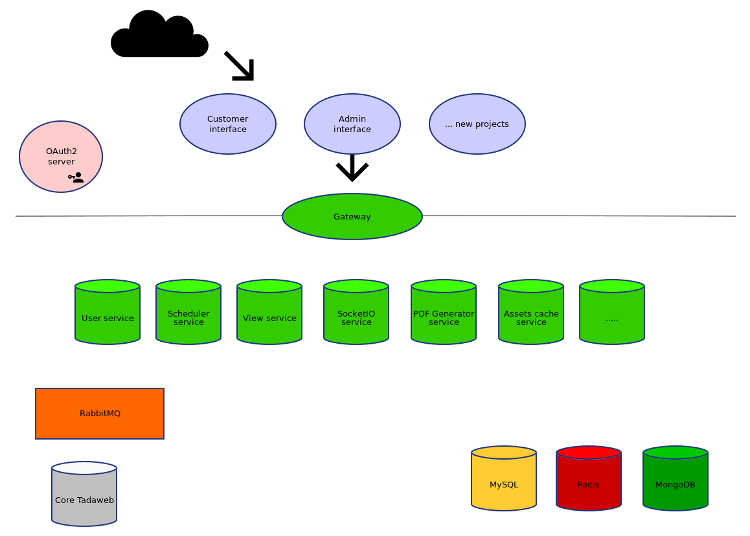

RabbitMQ nodejs integration at Tadaweb
@antoineg

AMQP 0-9-1
- Advanced Message Queuing Protocol
- Allow communication between publishers and consumers
- Programmable Protocol
Concepts
- Publisher
- Consumer
- Exchange
- Routing key
- Queue
- Channel
Default exchange
You always send a message to an exchange.
Used to send a message directly to a queue, without any special routing involved.
Channels
- Used to make all operations
- Messages count (aka prefetch) per channel or consumer
- An error in one operation can bork it
Connecting and creating channel
var amqp = require('amqplib');
amqp.connect().then(function(conn) {
conn.createChannel().then(ch => ...);
});
Types of exchanges
- direct
- fanout
- topic
- headers
Topic exchange routing

Headers exchange routing
- Use headers to route messages
- Ignore routing key
Tadaweb micro services architecture

Exchanges
- One direct exchange to send events (services.events)
- One fanout exchange per service (userservice.all)
RabbitMQ at Tadaweb
- Communication between web NodeJS services and Core C++ services
- Events to update data in each service
- Worker queues: PDF generation, long requests
Queues
- One queue per service (userservice) binded to the events exchange (services.events) with various routing keys
- One queue per process (userservice_${hostname}_${pid}_${uuid.v4()}) to consume service exchange messages
Custom queues
- Worker queues (pdf.worker)
- Dedicated channel with a custom prefetch count: 1 job at a time
Samples
- userservice bind his queue to services.events with routing key "tadaservice" to listen to events emitted from tadaservice
- pdfservice receive a message on it's service queue and send it to a custom worker queue